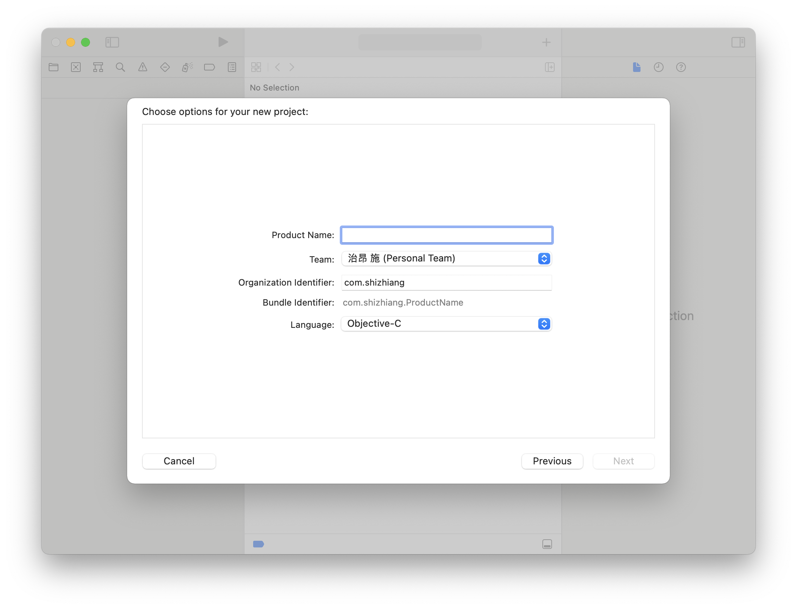
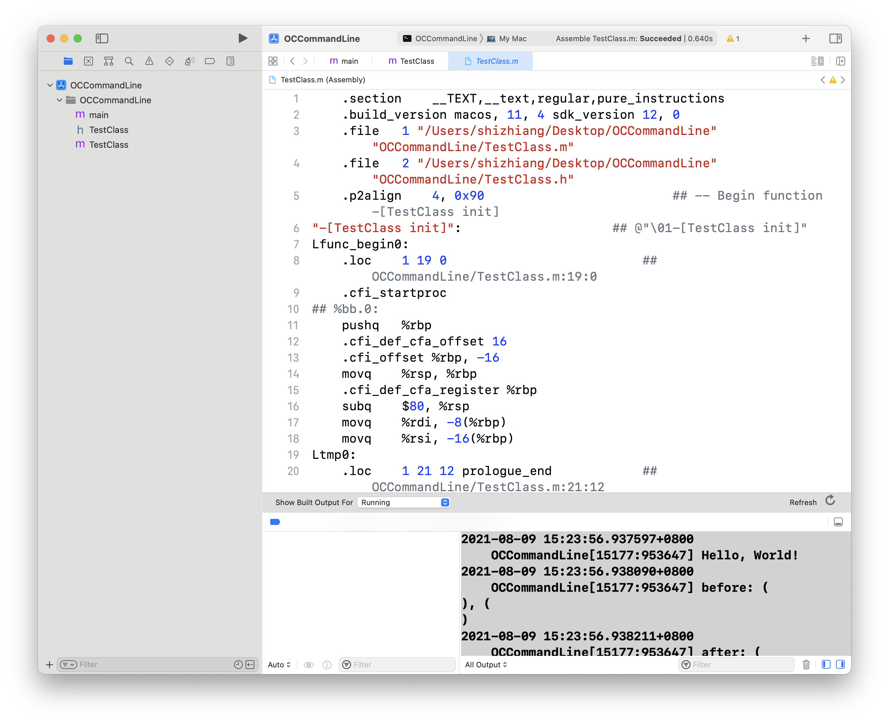

深度好文！深入汇编、源码搞懂Copy和Strong的实现原理
Objc的属性修饰符想必你已经非常熟悉了，对assign、weak、copy、strong等的用法早就烂熟于心。但是对它们的原理你了解多少呢，为什么同样一个数组使用了不同的修饰符后，它会有相差如此之大的行为呢？
本文就从汇编和Objc运行时源码的角度来对copy和strong修饰的数组进行一个深入探讨，主要包括下面两个方面：
strong和copy修饰符的作用效果- 通过对.m文件进行汇编来查看
copy和strong修饰符的本质区别 - 从apple开源的运行时代码查看
set方法的实现 Objc的属性修饰符想必你已经非常熟悉了，对assign、weak、copy、strong等的用法早就烂熟于心。但是对它们的原理你了解多少呢，为什么同样一个数组使用了不同的修饰符后，它会有相差如此之大的行为呢？
本文就从汇编和Objc运行时源码的角度来对copy和strong修饰的数组进行一个深入探讨，主要包括下面两个方面：
strong和copy修饰符的作用效果- 通过对.m文件进行汇编来查看
copy和strong修饰符的本质区别 - 从apple开源的运行时代码查看
set方法的实现
到公众号【iOS开发栈】学习更多SwiftUI、iOS开发相关内容。
新建一个Objc的命令行项目
-
在最新版的Xcode新建项目
-
选择macOS下的CommandLine，点击下一步
- 给项目起一个名字（比如ObjcAssemblyDemo），并选择Objective-C作用开发语言

- 在Xcode的目录树中右击选择“New File…”（快捷键 ⌘ + N），之后在macOS中选择“Cocoa Class”点击“下一步”后填写类名（我这里命名为“TestClass”），并选择Objective-C作为开发语言。
点击完成后，项目的目录树中包含main.m/TestClass.h/TestClass.m。
- 在TestClass.m中写入一些代码：
// TestClass.m
#import "TestClass.h"
@interface TestClass ()
@property (nonatomic, copy) NSArray *aCopyArr;
@property (nonatomic, strong) NSArray *strongArr;
@end
@implementation TestClass
- (instancetype)init
{
self = [super init];
if (self) {
NSMutableArray *mCopyArr = [NSMutableArray array];
self.aCopyArr = mCopyArr;
self.strongArr = mCopyArr;
NSLog(@"before: %@, %@", self.aCopyArr, self.strongArr);
[mCopyArr addObject:@"1"];
NSLog(@"after: %@, %@", self.aCopyArr, self.strongArr);
}
return self;
}
@end
我们在第7、第8行增加了aCopyArr和strongArr两个数组属性，并分别使用copy和strong来修饰它们。根据已有知识可以得知，Objc中的属性本质上是_xxx实例变量和getxxx、setxxx方法。
第18行初始化一个NSMutableArray的局部变量mCopyArr。
第19和20行分别把mCopyArr赋值给aCopyArr和strongArr，很明显，这里的赋值操作是通过调用它们的setxxx方法来实现的。
在第20行，向aCopyArr中添加了“1”这个元素。
21和23行分别打印了aCopyArr和strongArr，通过这两次输出可以观察到copy和strong标识符不同的作用效果。
strong和copy修饰符的作用
此时我们还没有使用到TestClass这个类，所以运行项目后只会有一个“Hello, World!”的输出。要想执行TestClass需要修改main.m文件：
// main.m
#import <Foundation/Foundation.h>
#import "TestClass.h"
int main(int argc, const char * argv[]) {
@autoreleasepool {
// insert code here...
NSLog(@"Hello, World!");
[[TestClass alloc] init];
}
return 0;
}
其中第10行代码是新加的，用来初始化TestClass类。这样的话TestClass.m中的init方法就会被调用。
通过点击Xcode左上角的执行图标（快捷键⌘ + R)来运行此程序，可以得到输出：
2021-08-09 15:23:56.937597+0800 OCCommandLine[15177:953647] Hello, World!
2021-08-09 15:23:56.938090+0800 OCCommandLine[15177:953647] before: (
), (
)
2021-08-09 15:23:56.938211+0800 OCCommandLine[15177:953647] after: (
), (
1
)
可以看到，在before那一行的输出结果中，两个变量都是空数组。而到了after的输出结果中，copy修饰的aCopyArr仍然是空数组，strong修饰的strongArr有了一个元素“1”。
截止到这里，有一些Objc开发经验的同学会知道copy修饰的数组是深拷贝，而strong修饰的数组是深拷贝，所以出现了不同的结果。
而这其中有些同学能确切的了解深拷贝和浅拷贝的执行原理，深拷贝是新分配了一块内存来而浅拷贝只是不同的指针指向同一块内存。
但是在OC中是怎么实现这两种拷贝方式的呢，使用不同修饰符的变量又是怎么知道该使用哪种拷贝方式的呢？下面两节分别给出答案。
深入汇编了解不同修饰符的实现区别
Xcode给我们提供了查看.m文件汇编指令的方式：
- 鼠标点击选中
TestClass.m文件 - 在Xcode菜单栏中选择Product，鼠标放到Perform Action，在次级菜单中点击“Assemble “TestClass.m””

这个汇编文件大概有1456行，如果之前对汇编没有了解，看起来会比较懵逼，不过没有关系，把这些内容分成几块来看就会清楚很多。
- 以
.开头的都是给汇编器看的内容，对我们的分析没有影响，比如.section ....p2align ....cfi_offset ....loc ...，有些是用来指导汇编器进行内存操作的，有些是用来帮助汇编器定位代码的，都可以忽略。 - 结尾带
:的是标签，也就是用来标记紧跟着的内容是做什么的，可以类比成函数名，比如Ltmp13:Lfunc_begin1:，利用这些标签程序在后续链接的时候就可以方便的进行来回跳转。 - 结尾带
:的标签中有几个用引号””包起来，这是方法标签，从这个标签往下直到另一个方法标签之间的内容就是一个函数体。
通过这样划分以后，这1000多行汇编代码就被分成了若干块。在这里我们针对"-[TestClass setACopyArr:]":和"-[TestClass setStrongArr:]":进行具体分析。
"-[TestClass setACopyArr:]": ## @"01-[TestClass setACopyArr:]"
Lfunc_begin2:
pushq%rbp
movq%rsp, %rbp
subq$32, %rsp
movq%rdi, -8(%rbp)
movq%rsi, -16(%rbp)
movq%rdx, -24(%rbp)
Ltmp9:
movq-16(%rbp), %rsi
movq-8(%rbp), %rdi
movq-24(%rbp), %rdx
movl$8, %ecx
callq_objc_setProperty_nonatomic_copy
addq$32, %rsp
popq%rbp
retq
Ltmp10:
Lfunc_end2:
"-[TestClass setStrongArr:]": ## @"01-[TestClass setStrongArr:]"
Lfunc_begin4:
pushq%rbp
movq%rsp, %rbp
subq$32, %rsp
movq%rdi, -8(%rbp)
movq%rsi, -16(%rbp)
movq%rdx, -24(%rbp)
Ltmp13:
movq-24(%rbp), %rsi
movq-8(%rbp), %rdi
addq$16, %rdi
callq_objc_storeStrong
addq$32, %rsp
popq%rbp
retq
Ltmp14:
Lfunc_end4:
通过对比可以发现，第3到第8行的内容是相同的，这里是在对函数调用栈进行一个初始化工作，包括申请内存空间和处理输入参数，而【setCopyArr:的第14行到最后】和【setStrongArr:的15行到最后】这两块也是相同的，这里是在对函数调用栈进行弹出操作。
显而易见的strong和copy修饰符的区别本质就集中在剩下的几行汇编代码了：
movq-16(%rbp), %rsi
movq-8(%rbp), %rdi
movq-24(%rbp), %rdx
movl$8, %ecx
callq_objc_setProperty_nonatomic_copy
movq-24(%rbp), %rsi
movq-8(%rbp), %rdi
addq$16, %rdi
callq_objc_storeStrong
这两块代码中的除最后一行分别调用了`_objc_setProperty_nonatomic_copy`、`_objc_storeStrong`，其他几行都是函数的参数。这两个函数是在runtime中实现的。
`copy`和`strong`修饰符的本质不同就是最终调用到的runtime函数不同，而这两个runtime的函数又有哪些不同呢，下面让我们继续探索。
# [](#深入runtime探索copy和strong的区别 "深入runtime探索copy和strong的区别")深入runtime探索`copy`和`strong`的区别
从Github可以下载到[runtime的开源代码objc4](https://github.com/opensource-apple/objc4)。下载到本地以后双击`objc.xcodeproj`打开项目。
在`objc-accessors.mm`文件中可以找到`objc_setProperty_nonatomic_copy`定义，而`objc_storeStrong`的定义在`NSObject.mm`文件中。下面先来看`objc_setProperty_nonatomic_copy`的具体实现。
void objc_setProperty_nonatomic_copy(id self, SEL _cmd, id newValue, ptrdiff_t offset)
{
reallySetProperty(self, _cmd, newValue, offset, false, true, false);
}
static inline void reallySetProperty(id self, SEL _cmd, id newValue, ptrdiff_t offset, bool atomic, bool copy, bool mutableCopy)
{
if (offset == 0) {
object_setClass(self, newValue);
return;
}
id oldValue;
id slot = (id) ((char*)self + offset);
if (copy) {
newValue = [newValue copyWithZone:nil];
} else if (mutableCopy) {
newValue = [newValue mutableCopyWithZone:nil];
} else {
if (*slot == newValue) return;
newValue = objc_retain(newValue);
}
if (!atomic) {
oldValue = *slot;
*slot = newValue;
} else {
spinlock_t& slotlock = PropertyLocks[slot];
slotlock.lock();
oldValue = *slot;
*slot = newValue;
slotlock.unlock();
}
objc_release(oldValue);
}
`objc_setProperty_nonatomic_copy`最终调用到的是`reallySetProperty`函数。下面对`reallySetProperty`进行分析，这里要结合上面的汇编代码：
1. 该函数接收7个参数。
1. 第一个是当前对象——TestClass对象；
2. 第二个参数是方法签名——“setACopyArr:”；
3. 第三个参数要修改成的新值——mCopyArr；
4. 第四个参数是偏移量，这里是指相对于self对象地址的偏移量，以此来查找对象中的某个属性值的地址——根据上面的汇编代码可知这个便宜量是8字节；
5. 后面三个参数在`objc_setProperty_nonatomic_copy`中分别给了false、true、false，这三个值是可以在语法分析阶段通过属性声明来获取到的。
2. 第8到11行的意思是如果offset为0就直接修改当前对象的指针。本例中offset为8，所以不会执行这几行代码。
3. 第13、14行声明了两个局部变量。其中`oldValue`是用来存储旧值，而`*slot`用来存放新值，并且初始化为当前属性值。
4. 第16到23行根据不同的属性修饰符进行不同的初始化操作。
1. 其中第17行就是本例的初始化操作，这里使用的是`copyWithZone:`，因此这里的newValue是一个全新的对象，拥有独立的内存空间。
2. 而19行和17行不同的是会生成可变的对象；
3. 最后的`else`分支中首先判断如果对象没有改变则直接返回，否则通过调用`objc_retain()`来增加一个指向`newValue`的指针，也就是一个浅拷贝的操作（这里也可以证明在不设置属性修饰符的情况下，默认是进行浅拷贝操作的）。
5. 第26和27行是对非原子属性进行了简单的赋值操作。在26行之前，`*slot`中存放的还是传递到这个函数中的对象，而`newValue`经过了上面的`copyWithZone:`后是一个新对象。这里先把`*slot`中的旧值给了`oldValue`变量——为了后面的释放操作，而新值给了`*slot`。
6. 第29到33行因为是`atomic`原子操作的，所以比非原子操作多了加锁的代码，这里使用的是`spinlock_t`锁。
7. 最后第33行，把旧值`oldValue`进行释放，从而达到引用计数平衡。
再看`objc_storeStrong`的定义：
/*
movq-24(%rbp), %rsi // mCopyArr
movq-8(%rbp), %rdi
addq$16, %rdi
callq_objc_storeStrong
*/
void
objc_storeStrong(id *location, id obj)
{
id prev = *location;
if (obj == prev) {
return;
}
objc_retain(obj);
*location = obj;
objc_release(prev);
}
```
有了上面对copy操作的分析，再来看strong操作就非常简单清晰了。这里是在保存新值和释放旧值的逻辑。很明显这里对新值的保存是直接retain的，而没有进行copyWithZone:类似的操作。因此objc_storeStrong只是一个新的指针指向了同样的内存区域，所以只有引用计数的增加。
到公众号【iOS开发栈】学习更多SwiftUI、iOS开发相关内容。
总结
从OC的代码到查看编译后的汇编代码，再到深入objc的runtime源码中查看copy和strong的实现区别，已经彻底搞清楚这两个修饰符修饰的变量为什么会有行为上的不同。也就可以解释清楚文章最开始的不同打印结果的原因。
由于篇幅有限，一些具体的汇编内容没有展开来说，有兴趣或者遇到问题的可以到公众号给我发消息。
本篇文章针对copy和strong两个修饰符的区别从OC代码深入到汇编进而到runtime的实现中一探究竟，对于其他几个修饰符并没有提到，有兴趣的同学可以自行深究。